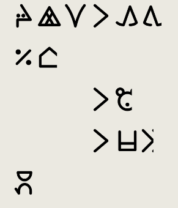
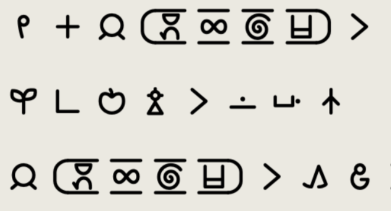

ale o: mi awen pali e lipu ni. ona li pini ala a la o toki ala e ona tawa jan mute. sina lukin e ona lon tenpo ni la o sona, ijo mute li awen wile kama pona. sina lukin e pakala suli nasa la o toki e ona tawa mi a.
English
Attention: This project is still being worked on. Please don't spread it too widely or link to it. But if you have feedback for it, let me know. Thanks!
Welcome, or 'o kama pona'
to a collection of free and
accessible Beginner Texts in
Toki Pona, featuring English translations, fun pictures, Sitelen Pona hieroglyphs, and gamification. Authored by
jan Lakuse.
Theme texts have several short pages. High picture-to-text ratio, simpler grammar
Bite-Sized texts have only one page, one picture, one story. As little as 40 words, no
more than 250 words. Less advanced grammar.
Quest texts have several pages each longer than 500 words. Advanced language, elaborate
topics.
Customizable Reading Experience
Would you prefer to read your Toki Pona using the alphabet, using Sitelen Pona hieroglyphs or both
simultaneously?
Wanna see the entire English translation, or compare the English and Toki Pona in a table, or reveal the
English
translation only for a line you're stuck on?
How about hiding the image or the image's description to give yourself an extra challenge?
The reading interface offers options for all of these and more!
Watch. Number. Go. Up.
Do you prefer to gamify your language-learning?
Enable the Reading Tracker to watch your checklist morph from red to green and your
progress bar fill up!
The version, mode, and image settings that you've configured will be saved only for the duration of your session. Opening Beginner Stories in a new tab or window will reset your preferences.
Available in the expanded menu, UCSUR Preferences for 'Using ASCII' and 'Converting page' are similarly stored only for the duration of your session.
Your selection to 'Always Use UCSUR', as well as your preference for Light Mode or Dark Mode, will persist across sessions.
Accessibility
Beginner Texts is designed with technical accessibility considerations in mind.
The contexualizing descriptions are duplicated as alt text. If using a screenreader, you may prefer to turn
either the contexualizing descriptions or the images off to prevent the presentation of duplicated information.
These contextualizing descriptions contain all information that the story itself might reference.
If you experience accessibility-related issues while using the site, (regardless of whether you faced a barrier or simply had a poor user experience), I desperately want to know the issue so that I can fix it. Contact me at tokipona.sasalin@gmail.com. or on Discord @raacz106.
Broken Sitelen Pona
For various reasons purposes, Beginners Texts defaults to presenting its Sitelen Pona stories using ASCII input.
This is known to result in some issues.
Like in FireFox, the edges of characters will be cut off
Someone's house has been broken into, a cooing animal has had half of its face ripped off, and an 'e' has become a 'li.'

And in Safari, spaces appear in units that are supposed to be combined.
No, not jan Mano. jan M A N O. Full caps.

By going into the extended settings, and selecting 'Convert Page to UCSUR', these rendering bugs will be fixed. But you do risk introducing new strange renderings. In particular, multidirectional arrows and punctuation likely will have some conversion errors.
If you're on Chrome, you likely don't need to worry about this.
The English translations can be very helpful. But when you use them, it's good to be aware of the following
things:
Literal Translations
You may notice that some of the English translations appear to be ungrammatical, strange, or uncanny. This is
because I've tried hard to reflect Toki Pona syntax and semantics in the English itself.
For example, I might translate something like, "I arrive in the large building's basement,"mi kama lon anpa pi tomo suli, as "I come to be located at the large building's
underside."
kama, used in this phrase as a preverb, is literally "come to be"
lon, used in this phrase as a preposition, is literally "located at"
anpa pi tomo suli is literally "the large building's underside"
I hope this style of translation, while being slightly ungraceful, helps emphasize the language's unique
structure and tendencies to learners.
Multiple 'Right' Answers
My English translations offer one correct interpretation of the material, but other correct
interpretations are possible.
For example, a tomo suli can be a large structure, an important home,
and old mansion, a large bus.
When I translate a Toki Pona word, I am often forced to pick just one, specific, English word, even though the
Toki Pona word is more broad. If you happen to think of a different word than the one I pick, it doesn't
necessarily mean that you were wrong.
For example, if your translation is 'big house' and my translation is 'old structure,'
and the picture is of a large, old mansion, we are both right.
Consulting a good dictionary is one way to confirm your own interpretation,
especially if you are just getting used to the words.
About my Toki Pona
Non-Standard Words
In the stories, I use the same words that I seriously use in real life.
In lipu Linku terms, relying on 2025 polling
data, this means all Core words as well as the Common words: kipisi, kin, leko, meli, mije, misikeke, monsuta, n, namako, soko, tonsi; and the
Uncommon word: majuna.
You are free to use and not use whatever words you like. Most teachers recommend taking the time to really
understand the Core words before experimenting with other words. See: "Can I add a new word?"
at /r/tokipona's FAQ.
Using Sitelen Pona
All texts have both Sitelen Pona and sitelen Lasina versions. Each Sitelen Pona document is
formatted separately; it is not simply a matter of applying a different font. There may be differences between
the two versions.
I use a punctuation-less indented style of Sitelen Pona, and the site uses the nasin nanpa font throughout.
I regularly make use of the directional ni to indicate e ni:
clauses.
Grammatical Choices
In this texts, I've decided to use some of these grammatical styles:
Extensions:
extended li style with mi and sina.
multiple pi phrases can be used subsequently (used only in Quest texts)
lukin is used as a preverb meaning 'to try to' instead of alasa
Restrictions:
kepeken cannot be used as a content word
prepositional phrases cannot modify the subject
prepositional phrases cannot be used as transitive predicates
CC-BY: Use in any way you want (even use it to make money) but attribute the author and
link to the original license.
CC-BY-SA: Use in any way you want, attributing the author and linking to the original
license, but anything you make with it also has to be licensed as CC-BY-SA.
CC-BY-SA is also the license that Beginner Stories uses for the vast majority of its content.
For more information on my personal motivation behind using Creative Commons licenses, read jLakuse o, Why Creative Commons.
But there are two major exceptions.
In the case that a page features an image that is licensed under GFDL-1.2, the page comprises a document
licensed under GFDL-1.2. Details for the GFDL license will be clearly indicated above the footer.
In the case that a page features an image that is licensed under
CC-BY-NC, the text of that page is still licensed under CC-BY-SA, as Creative Commons
licenses do not recognize a grouping together of discrete works into one work as an 'Adaptation'. Pages
that feature a CC-BY-NC image have a note above the footer that links to this explanation.
Do be aware that the CC-BY-NC image's license remains in effect, meaning that while you can sell a
properly reproduced version of just the CC-BY-SA text, you cannot reproduce
the CC-BY-NC image/CC-BY-SA text combination for commercial purposes.
Help, Feedback and Contributions
If you spot any errors, experience any bugs, or would like to request features, please contact me.
On Discord, my username is @raacz106.
Not on Discord? Contact tokipona.sasalin@gmail.com.


 Encounter a cute critter with
Encounter a cute critter with  Assemble a veggie-burger element by element with
Assemble a veggie-burger element by element with  Learn about the work of Utagawa Hiroshige I in
Learn about the work of Utagawa Hiroshige I in